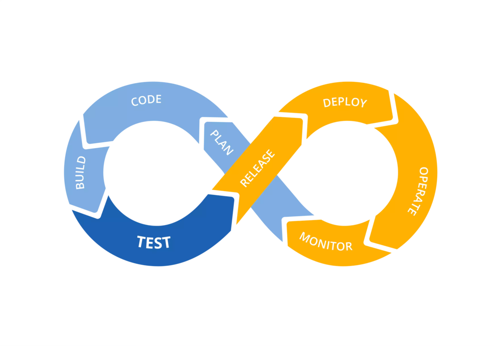
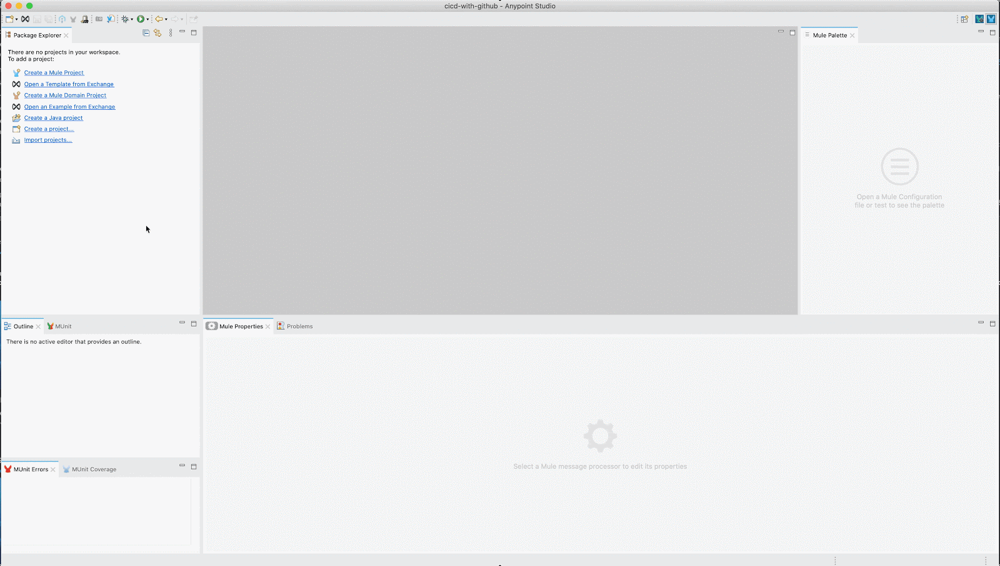

Last updated: 2020-09-15

Continuous Integration: This is the process of keeping code iterations as small as possible, and integrating them into the main codebase. By keeping our changes small, we can more quickly identify and fix new issues introduced into the codebase, as well as more quickly release stable updates. In this example, you will briefly touch on this process by automating unit testing via the MUnit plugin.
Continuous Delivery: This process ties back into continuous integration, and is the concept that our codebase should always remain deliverable. The main codebase should never enter a state which can not be deployed. As part of this process, we automate building and testing, typically via automatic deployment into QA and UAT environments. We will cover this by utilizing the `mule-maven-plugin` to automate deployment into our Sandbox environment.
Continuous Deployment: This is typically considered the next and final step in building out an automated pipeline; when a company is utilizing continuous deployment, the release management is tied into an automated process. While we will be taking a simplistic approach, we will touch on this today by creating a protected main branch, which requires that our build and test phases in Sandbox have passed before they can be merged into the master branch, and trigger a deployment to the Production environment.
In this codelab, you're going to build a mulesoft API, which you will commit to a new GitHub repository. We will then walk through setting up GitHub Actions to act as our CI/CD platform. Your project will:
In order to automate mule application testing and deployment, we first have to have an actual application to work with! We will be using the hello-world example in Mulesoft's exchange.
cicid-with-githubOpen an Example from Exchange in the package explorerProvided by Mulesoft on the left in the exchange windowOpen in the top right
Next, we will create a GitHub repository to house our code, and to run our CI/CD workflow.